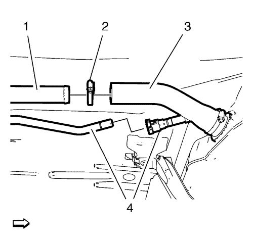

- Abra el capó.
- Desconecte el cable negativo de la batería. Consultar Desconexión y conexión del cable negativo de la batería .
- Vacíe el depósito de combustible. Consultar Drenaje del depósito de combustible .
- Elevar el vehículo y soportarlo de manera segura. Consultar Elevación y soporte en alto del vehículo .
Advertencia: No respire el aire procedente de los tubos o mangueras de los componentes del EVAP. Los vapores de combustible existentes en el interior de los componentes del EVAP podría ocasionar lesiones físicas.
Advertencia: La gasolina o los vapores de gasolina son muy inflamables. Puede producirse un incendio si existe una fuente de chispa. Nunca vacíe o almacene gasolina o combustible diesel en un recipiente abierto debido al riesgo de explosión o incendio. Disponga de un extintor de incendios químico seco (clase B) en las proximidades.
Advertencia: Cuando manipule combustible, lleve siempre gafas protectoras para proteger sus ojos de posibles salpicaduras.
- Desenganche el tubo de alimentación de combustible (3) del clip de soporte trasero (2).
- Desacople el conector de la tubería de alimentación del depósito de combustible (1) de la tubería de alimentación de combustible (3). Consultar Servicio del adaptador de conexión rápida del collarín plástico .
- Cierre la tubería de alimentación de combustible y la tubería de alimentación del depósito de combustible con tapones de cierre EN-6015.

- Desenganche el tubo de ventilación de combustible (3) del clip del soporte trasero (2).
- Desemborne el conector del tubo de ventilación del combustible del depósito de emisión de vapores (1) del tubo de ventilación del depósito de combustible (3). Consultar Servicio del adaptador de conexión rápida del collarín plástico .
- Cierre el tubo de ventilación del depósito de combustible y el tubo de ventilación del combustible del depósito de emisiones con tapones de cierre EN-6015.

- Retire la abrazadera (2).
- Desmonte el tubo flexible de llenado del depósito de combustible (3) del tubo de llenado del depósito de combustible (1).
- Desacople el tubo de ventilación del tubo de llenado del depósito de combustible (4). Consultar Servicio del adaptador de conexión rápida del collarín plástico .

Atención: Al elevar o izar un vehículo por los rieles laterales del bastidor u otros puntos de elevación recomendados, asegúrese de que las almohadillas de elevación no entran en contacto con el catalizador, las tuberías del freno o de combustible. Si tal contacto ocurriera, podría ocasionar daños en el vehículo o un funcionamiento insatisfactorio del mismo.
- Coloque un gato regulable adecuado debajo del depósito de combustible (1).
- Retire los 2 tornillos de abrazadera del depósito de combustible (3) con los seguros de tornillo de abrazadera del depósito de combustible (2).
- Retire los 2 tornillos de abrazadera del depósito de combustible (5) con los seguros de tornillo de abrazadera del depósito de combustible (6).
- Desmonte las 2 abrazaderas del depósito de combustible (4).
Nota: Es necesario un segundo técnico.
- Baje el gato por pasos hasta que pueda retirar el enchufe del mazo de cables del módulo de la bomba de combustible del depósito de combustible (2).
- Desemborne el enchufe del mazo de cables del módulo de la bomba de combustible del depósito de combustible (2) del módulo de la bomba de combustible del depósito de combustible (1).
- Suelte el mazo de cables del módulo de la bomba de combustible del depósito de los 2 clips de soporte (3).
Nota: Baje el gato.
- Desmonte el depósito de combustible.